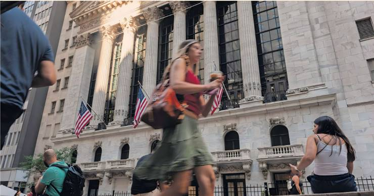
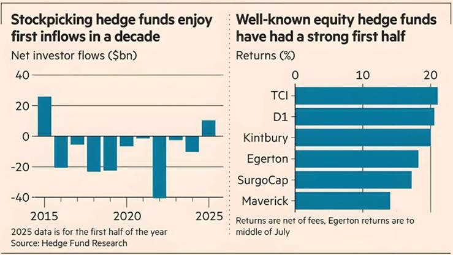

Stockpicking hedge funds have made a comeback during this
year’s market turbulence, with sizeable gains helping the sector to attract
fresh cash from investors after nearly a decade of outflows.
So-called equity long-short funds, which try to buy stocks that they think will
do well and bet against companies they think will underperform, took in $10bn
from investors in the first half of the year, according to data from Hedge Fund
Research. This follows more than $120bn in withdrawals since 2016.
The inflows came as some of the industry’s biggest names — including Chris Hohn’s TCI and John Armitage’s Egerton — earned double-digit returns in the six months to June, according to people familiar with the figures, and asset allocators sought alternatives to broad index-level exposure amid some big market swings.
“The stockpicker’s market is back,” said Zlata Gleason, partner and head of client advisory at Indus Capital. “If you look at the volatility underneath, it’s like a rollercoaster. And that’s where stockpickers can really benefit.”
Long-short hedge funds had suffered nine straight years of redemptions as they failed to deliver on their promise of superior protection for investors during downturns — particularly the vicious equity sell-off in 2022 — despite demanding high fees.
One of the oldest and best known sectors of the industry, they have in recent years been overshadowed by giant “multi-manager” funds, which spread clients’ money over a variety of strategies. But 2025’s market volatility, with stocks tumbling following President Donald Trump’s so-called “liberation day” tariff salvo in April before rebounding, has proved a more fertile environment for stockpickers.
The long-short strategy has been among the best performers in the hedge fund industry so far this year, returning 3.5 per cent in June and 9.2 per cent in the first half of the year, according to data from PivotalPath.
“Liberation day was a bit of a wake-up call for people,” said Charles Lemonides, the founder of hedge fund ValueWorks. “The volatility around that moment caught their attention ... You don’t want to have just naked exposure to markets that swing that violently.”
London-based hedge funds including TCI, Egerton, and Kintbury Capital earned returns of 20 per cent or more. Equity strategies in Europe have been the best performing of any region this year, according to data from PivotalPath.
In the US, Lee Ainslie’s Maverick and Daniel Sundheim’s D1 Capital Partners — both among the many offshoots of Julian Robertson’s famous hedge fund Tiger Management — gained 14 per cent and more than 20 per cent, respectively. Mala Gaonkar’s SurgoCap Partners, a hedge fund started by the sector’s most prominent female founder, is up 17 per cent this year after rising 33 per cent last year. The firm is managing $5bn after launching with $1.8bn in investor capital in 2023.
Some stockpickers said they were belatedly reaping the benefits of relatively high interest rates. Many managers in the sector blamed low borrowing costs and central bank asset purchases in the decade following the 2008-09 financial crisis for driving markets higher in lockstep, making it tough to find stocks to bet against.
Now, investors were applying greater scrutiny to company earnings, said one London-based hedge fund manager. “The market is incredibly unkind to companies that miss numbers, that is a great environment for stockpickers,” the manager said.
A broadening of equity market returns — which for many years have been dominated by big US technology stocks — has also helped. On Wall Street this year, the equal-weighted version of the blue-chip S&P 500 benchmark has kept pace with the main index, which is weighted by market value and has risen 8 per cent so far in 2025. Many European indices have outshone the S&P 500 for the first time in years in the turmoil unleashed by Trump’s trade war.
Defence stocks such as Rheinmetall in Germany and BAE in the UK have rallied strongly as investors return to previously unloved sectors. “The world’s largest three or four companies are no longer dominating index returns,” said a second hedge fund executive in London. “So it’s a bit more of a stockpicker’s market.”
In recent years, it had been nearly impossible to raise money for a long-short equity hedge fund outside the top 10 per cent of performers, said one top banker. Yet that had changed since the start of the year as market volatility had driven investors back to stockpickers, the banker added.
Still, the head of one prominent team at a European family office warned against getting too excited about a lasting revival in inflows for long-short hedge funds, saying performance had been violently “erratic” over the past few years.